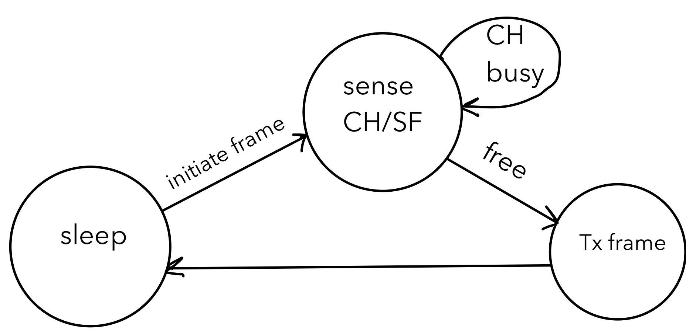
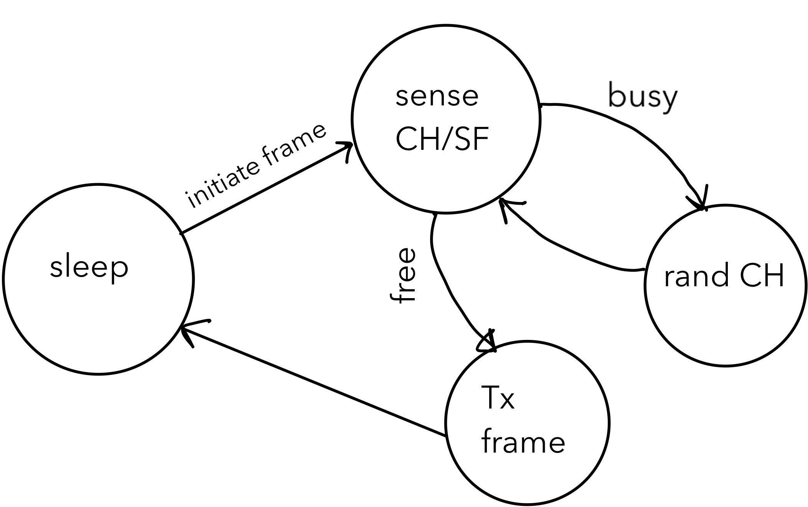
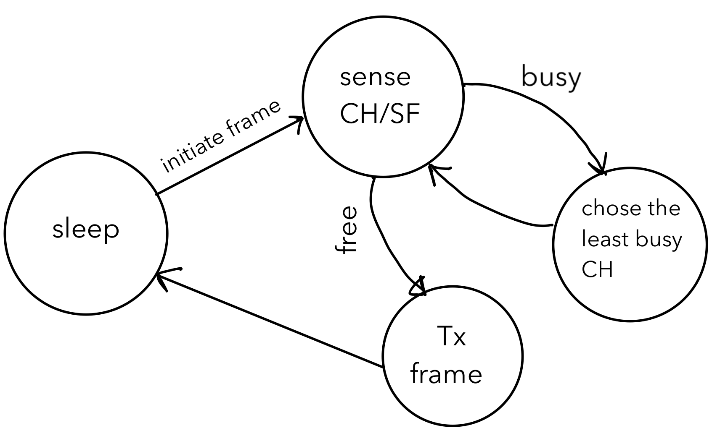

LMIC_CSMA_LEVEL 1: channel sensing top
Under this configuration, a LoRa node first senses the chosen CH/SF combination for ongoing transmissions for a DIFS duration.
During a DIFS window, a random number of CAD operations are executed; the number of CADs to perform is randomly selected, with 20 set as the maximum.
To assume a free channel, a clear DIFS window is mandatory. This means that all CADs performed within the DIFS window must report that the channel is free.
If an ongoing transmission is detected, under LMIC_CSMA_LEVEL 1 the node waits until the channel is free prior to transmitting the frame.
The following state diagram highlights possible states a LoRa node may undergo prior to making a transmission under this setting.

LMIC_CSMA_LEVEL 1.LMIC_CSMA_LEVEL 2: random channel hopping top
This option performs the channel sensing as per LMIC_CSMA_LEVEL 1 but allows a node to hop randomly to a different channel upon sensing a busy CH/SF.
If an ongoing transmission is detected, the node switches to a randomly selected channel and senses it for ongoing CH/SF transmissions.
If the newly selected CH is sensed free, the frame is transmitted. Otherwise, the process repeats.
The channels available for random selection are the eight user-defined channels.
The following state diagram highlights possible states a LoRa node may go through prior to making a transmission under this setting.

LMIC_CSMA_LEVEL 2.LMIC_CSMA_LEVEL 3: opportunistic channel profiling top
This option enables opportunistic channel profiling. Under this setting, a node maintains an "occupancy matrix" representing the busyness of 8 channels. In other words, the occupancy matrix is a record of a node's own historical interactions with channels. When a channel is sensed busy, the node searches through this matrix and opts for the least busy channel. This mechanism, as opposed to random channel selection, yields faster results under higher network contention.

LMIC_CSMA_LEVEL 3.